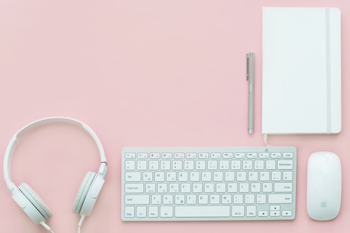

Skills
I can type about 40- 45 wpm and can get work done really fast if I stay focus. My gpa has always stayed in the top award range. I can be really dedicated to my work and life so I can succeed.I am very independent person and love to make projects. I am creative with things like making room decor, painting, drawing, and etc. I put a lot of pressure on myself to do what I want to do when I grow up. If I am not having fun it means that is not what I want to do.
- PhotoShop
- Illustrator
- SketchUp
- FloorPlanner
- Microsoft Excel, Word, and PowerPoint
